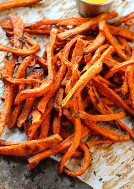

Baked Sweet Potato Fries

INGREDIENTS
- 3 large sweet potatoes
- 2 tbsp olive oil
- 1/2 tsp paprika
- 1/2 tsp salt
- 1/2 tsp ground black pepper
- 2 tbsp chopped parsley
DIRECTIONS
1.Preheat the oven to 400 degrees F.
2.Cut the potatoes into wedges. Place on a baking tray. Drizzle with oil and sprinkle with paprika, salt and pepper. Toss everything together with your hands.
3.Place in the oven to cook for 25-30 mins. Turn once with a spatula during cooking, and keep and eye on them for the last 10 minutes to ensure they don’t overcook.
4.Once cooked, sprinkle with a little chopped parsley and a sprinkling of salt and pepper before serving.
BACK TO HOME